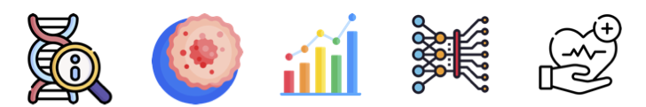

In the last 5+ years, I've worked on a diverse set of projects spanning the intersection of fields like Statistics, Genetics, Cancer Biology, Machine Learning and Public Health.

Cohort Event Monitoring of Patients Treated with a Tenofovir/Lamivudine/Dolutegravir (TLD) Regimen in Mozambique
UW School of Pharmacy | Biostatistician | June 2023 - September 2023
Skills: Statistical analysis, Report preparation, Pharmacovigilance
- Characterized the types, rates, and risk factors for adverse events in the TLD Regimen using statistical modeling techniques.
Statistical insights to improve the prediction of polygenic risk score modelling
Icahn School of Medicine at Mount Sinai | Research Assistant | February 2022 - September 2022
Skills: Statistical modeling, GWAS
- Implemented a novel shrinkage method on UK Biobank data and summarized key algorithmic considerations and biological insights in the form of a manuscript (in preparation).
Bioinformatics pipeline to quantify aneuploidy in whole exome sequencing data
Herbert Irving Comprehensive Cancer Center | Research Assistant | October 2020 - April 2022
Skills: Bioinformatics, Cancer Biology, AWS-Cloud9
Quantified mutations (point and indels) stratified by chromosomal regions and genes across healthy and tumor samples.
Worked on a collaborative study with Genentech Inc. to understand correlations between immunotherapy status and copy number variations in multiple tumor types.
Deriving a gene signature for systemic lupus erythematosus with high diagnostic accuracy using a multi-cohort analysis framework
Inflammatix inc. | Computational Biology intern | August 2021 - September 2021
Skills: Statistical modeling, Microarray analysis, Multi-cohort analysis
- Derived a gene expression signature to distinguish between healthy controls and Systemic Lupus Erythematosus (SLE), validated in an independent set with high accuracy.